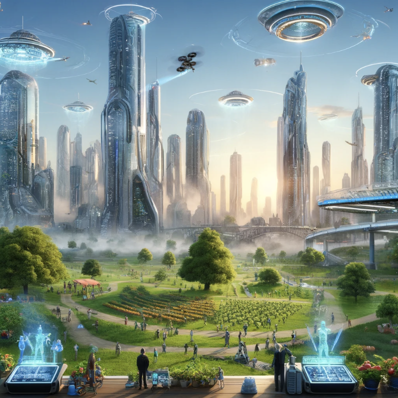

I recently finished reading Homo Deus, which analyzes the development of the human species, including everything from social interactions to religion to economic evolution, and the future development with the rapid technological advancements, and how what it means to be a human, or Homo Sapien, might be in question. So I want to see how GPT-4 thinks the world and humans will progress over 5 different time periods.
Me: Let’s predict the future. We are going to go period by period into the future, and I want you to make predictions on technology, politics, economics, societal shifts, environmental/climate changes, scientific breakthroughs, health/medicine, potential risks/challenges, etc. I will tell you one by one which period we will analyze.
First, I started with 2030:
Detailed Predictions for 2030
Technology:
- Artificial Intelligence (AI): Virtual assistants like Siri and Alexa will evolve into sophisticated digital companions capable of handling more complex tasks, such as making real-time medical recommendations and managing finances. AI will also be deeply integrated into industries like agriculture and manufacturing for predictive maintenance and efficient resource allocation.
- Quantum Computing: Companies like IBM and Google, among others, will offer early-stage quantum computing platforms to solve optimization problems, speeding up complex computations for logistics and drug discovery. Though not yet broadly applicable, niche applications will prove economically valuable.
- Internet of Things (IoT): Smart homes will feature appliances capable of learning user preferences and adjusting themselves accordingly (e.g., refrigerators automatically restocking, thermostats adjusting based on daily routines). Smart cities will leverage IoT to improve traffic flow, reduce energy waste, and enhance public safety.
Politics:
- Global Alliances: The UN and regional blocs (e.g., EU, ASEAN) will coordinate climate and cybersecurity initiatives, resulting in cross-border policies. New economic alliances will emerge to counterbalance China’s growing influence, particularly in digital currency and trade.
- Tech Regulations: Governments will impose stringent data protection laws, forcing tech companies to be transparent about data usage. A “Digital Bill of Rights” may emerge, giving individuals greater control over their online identity.
Economics:
- Digital Currencies: Central Bank Digital Currencies (CBDCs) will be introduced by several nations, enabling faster international transactions and lowering remittance costs. Major tech companies will expand into digital payments with stablecoins, challenging traditional banks.
- Remote Work: Large corporations will invest in “office hubs” in smaller cities, offering workers flexibility while maintaining collaborative spaces. This will stimulate local economies and diversify the talent pool.
Societal Shifts:
- Aging Population: Governments will enact policies to attract younger workers and provide incentives for people to work beyond retirement age. Elder care tech (robots, monitoring systems) will alleviate some burden on caregivers.
- Urbanization Trends: In developing regions, urbanization will accelerate due to job opportunities, while developed nations will see migration to suburban and rural areas enabled by remote work.
Environmental/Climate Changes:
- Climate Commitments: Carbon markets will expand, and countries will implement stricter emissions trading schemes. Electric vehicle adoption will surpass 40% of global sales due to improved charging infrastructure and battery efficiency.
- Extreme Weather: Rising sea levels and unpredictable weather will necessitate resilient infrastructure projects, especially in coastal cities, increasing demand for engineers and urban planners.
Scientific Breakthroughs:
- Fusion Energy: ITER and private fusion initiatives like Helion Energy will demonstrate consistent plasma containment and generation. This proof-of-concept will drive investment in scalable fusion reactors.
- Space Exploration: Lunar bases will facilitate experiments in low gravity and material sciences. Mars missions will involve autonomous rovers laying groundwork for future crewed missions.
Health/Medicine:
- Genomics: Genetic therapy for conditions like cystic fibrosis and muscular dystrophy will become more accessible, with CRISPR-based treatments available for select diseases. The healthcare industry will use genetic profiling for personalized drug recommendations.
- Pandemic Preparedness: An interconnected network of global health surveillance will identify viral outbreaks quickly, with mRNA vaccines and antiviral drugs reducing vaccine development time.
Potential Risks/Challenges:
- Cybersecurity Threats: Coordinated attacks on power grids, healthcare systems, and financial institutions will prompt international efforts to create unified defense protocols. Critical infrastructure will rely on AI-driven security.
- Economic Inequality: Automation will replace more low-skilled jobs, particularly in manufacturing and customer service. Governments will explore Universal Basic Income (UBI) pilots to mitigate social unrest.
I started to think about how some of the things that it is suggesting might end up becoming hard to fathom. So to make each one easier to apply and understand, I then asked to describe an average American’s day.
Me: For each period, we will focus on an average American in this world and describe what an average day might look like and how it is different from the previous period.
GPT: A Day in the Life of an Average American in 2030
Morning:
- Wake-Up: The morning begins with a gentle alarm integrated into the smart home system, which slowly brightens the lights and plays calming music. The smart thermostat adjusts to the ideal temperature based on the user’s historical preferences. The digital assistant updates the person on the day’s schedule, traffic conditions, and any weather alerts.
- Breakfast & Routine: The refrigerator monitors food supplies and has already placed an order for restocking essential items. The digital assistant orders breakfast delivery for a busy morning or suggests a quick, healthy recipe with what is available. News is consumed on a flexible digital screen, while a workout routine is recommended via a personalized fitness app.
Commute & Work:
- Commuting: If traveling to a hybrid office hub, the person schedules an autonomous ride-sharing service. They can work on the way, and the vehicle optimizes the route using real-time traffic data. Once at the office, they enter through facial recognition systems.
- Remote Work: If working from home, meetings are conducted via immersive augmented reality (AR) platforms, where participants interact with holographic-like avatars in a virtual boardroom. A wearable monitors productivity and suggests breaks for better focus.
Midday:
- Lunch: The smart home system or office assistant orders a meal from a local ghost kitchen that uses drones for fast delivery. Alternatively, the person might opt for lab-grown meat or plant-based options due to increasing environmental awareness.
- Health Monitoring: The wearable checks health metrics (e.g., heart rate, blood sugar) and recommends light exercise or hydration reminders to ensure wellness throughout the day.
Afternoon:
- Work & Collaboration: Work involves AI-assisted tools that automate data entry, manage emails, and generate reports, leaving the person to focus on creative or strategic tasks. Collaboration between team members, whether at the office or remote, is seamless due to AI tools that summarize meetings and suggest action points.
- Learning & Development: With the rapid pace of technological change, the person takes advantage of short online courses provided by employers or institutions to stay relevant in their field.
Evening:
- Entertainment: Entertainment is delivered via immersive, on-demand virtual reality (VR) experiences or interactive media, with storylines that change based on user input. Games or social interactions can happen within the same virtual environment.
- Dinner & Relaxation: Dinner is cooked with smart appliances or delivered. Relaxation activities might include meditation, music therapy, or hobby-related courses tailored to the individual’s interests. Smart lighting and ambient noise help create a calming atmosphere.
Sleep:
- Wind-Down: The smart home system automatically adjusts lights, temperature, and noise levels to ensure optimal sleep quality. A sleep tracker helps monitor rest patterns and provides tips for improvement.
Differences from 2020s:
- Work & Commute: Autonomous vehicles and hybrid work models significantly reduce time spent commuting. The traditional 9-to-5 routine has been replaced by more flexible, productivity-focused schedules.
- Health & Wellness: Wearables and personalized healthcare make it easier to maintain well-being, with AI providing timely recommendations for diet, exercise, and mental health.
- Consumption: Growing environmental awareness leads to increased demand for lab-grown and plant-based foods. Subscription-based delivery services simplify the daily diet.
- Entertainment & Socialization: AR and VR technologies blur the lines between physical and virtual interactions, enabling richer social connections even in remote settings.
Next: 2040
Now, I asked for the next time analysis to be intricate, specific, in-depth, etc. All the adjectives. So it provided me with more detailed info and explained more specifically how each thing will happen and how it will be applied. Then in the same response, it included the “Average Day” part as well.
Predictions for 2040
Technology:
- Artificial Intelligence (AI): By 2040, AI assistants have evolved into highly personalized digital companions, understanding their users through lifelong learning models. They anticipate needs and suggest proactive solutions for both personal and professional matters, from career guidance to managing mental health. Autonomous agents will also be pivotal in decision-making across industries.
- Quantum Computing: Quantum computing will become a commercial reality, particularly in industries requiring immense computational power, such as materials science, cryptography, and global logistics optimization. Quantum algorithms will revolutionize cryptography, making many current encryption methods obsolete.
- Internet of Things (IoT): IoT ecosystems have become seamlessly integrated into daily life, ranging from wearable health monitors to city infrastructure. Smart cities utilize interconnected sensors to control traffic, prevent crime, and reduce energy consumption. Home appliances self-maintain, diagnosing and repairing themselves.
Politics:
- Global Governance: Multinational institutions have expanded their role in global issues like climate change, technology regulation, and cybersecurity. A new era of global governance emerges, where countries collaborate more closely to regulate AI development and digital surveillance.
- Tech Legislation: Governments enforce strict regulations on AI ethics and data privacy, ensuring algorithms are unbiased and transparent. There’s a framework for licensing AI developers, requiring strict adherence to global ethical standards.
Economics:
- Universal Basic Income (UBI): Several countries have adopted UBI or similar safety nets to counter job displacement caused by automation. This provides people with a stable financial base, encouraging entrepreneurship and creative pursuits.
- Circular Economy: Sustainable business practices have led to a circular economy where waste is minimized. Companies are required to take responsibility for the entire lifecycle of their products, promoting recycling and reuse.
Societal Shifts:
- Demographic Changes: Many developed nations face a demographic crunch due to aging populations, prompting increased reliance on immigration and automation. Developing nations see a population boom but struggle with youth unemployment.
- Work & Leisure: A 4-day workweek or equivalent flexible arrangement becomes standard. Individuals dedicate more time to lifelong learning, creative hobbies, and family due to technological advances that free up time.
Environmental/Climate Changes:
- Net-Zero Economy: Achieving net-zero emissions becomes the standard, with renewable energy supplying a vast majority of global power. Energy storage technologies like advanced batteries and hydrogen fuel cells enable round-the-clock renewable energy availability.
- Geoengineering: To mitigate climate change, geoengineering technologies like carbon capture and solar radiation management are cautiously implemented. These technologies, however, are closely regulated due to ethical and environmental concerns.
Scientific Breakthroughs:
- Human Longevity: Breakthroughs in cellular biology and genetics extend healthy lifespans. Therapies targeting age-related diseases, like Alzheimer’s, slow or halt disease progression.
- Space Colonization: The moon serves as a staging ground for deeper space exploration, with mining operations and research bases. Human settlements on Mars are in the early stages, with small-scale colonies relying on autonomous systems.
Health/Medicine:
- Organ Printing: Bioprinting technology allows the creation of customized organs, greatly reducing transplant waiting times. Lab-grown tissues and organs lead to better success rates and more personalized treatment.
- Neurotechnology: Brain-computer interfaces help people manage neurological disorders, enhance cognitive abilities, and improve memory recall. Non-invasive neuromodulation devices offer mental health support through personalized stimulation.
Potential Risks/Challenges:
- Bioterrorism & Pandemics: Rapid advancements in biotechnology raise concerns about bioterrorism. Governments and international organizations bolster their biosecurity measures while developing rapid vaccine production capabilities.
- Technological Divide: Despite global progress, disparities in digital infrastructure leave some regions behind. Countries lacking proper tech regulations experience increased data breaches and exploitation.
A Day in the Life of an Average American in 2040
Morning:
- Wake-Up & Routine: The smart home system adjusts the environment to the ideal conditions for waking up based on sleep data. The digital companion briefs the person on the day ahead, including health and productivity recommendations. It can also suggest a workout tailored to energy levels.
- Breakfast: The meal plan is optimized for the individual’s nutritional needs and is either prepared by a smart kitchen appliance or delivered by drone from a local kitchen. Food is often lab-grown or sustainably sourced.
Commute & Work:
- Commuting: Autonomous vehicles or public transportation pods, equipped with VR displays for entertainment or work, seamlessly take individuals to their workplace hubs. Alternatively, remote work is common, facilitated by AR holographic meetings and virtual reality workspaces.
- Work Tasks: Many routine tasks are managed by AI assistants, while the person focuses on creative or strategic work. AI tools help analyze data, write reports, and plan projects with minimal supervision.
Midday:
- Lunch Break: The digital companion advises on meal choices that best support the afternoon schedule, possibly integrating AI-curated recipes or delivering pre-prepared meals. An outdoor stroll or AR fitness game provides a refreshing mental break.
- Learning & Upskilling: Frequent micro-learning breaks are common, offering skill improvement through adaptive and interactive AI courses.
Afternoon:
- Work & Collaboration: Collaboration is entirely virtual or AR-based, with real-time translation and summarization features. Teams span the globe and seamlessly collaborate in immersive digital workspaces.
- Health Monitoring: Non-invasive wearables track physical and mental health metrics, providing real-time feedback to maintain peak productivity. Individuals take brief meditation or exercise breaks as prompted.
Evening:
- Entertainment: Entertainment options include fully immersive VR/AR games or interactive storytelling tailored to the user’s interests. Physical hobbies are also supported with AR overlays and guided tutorials.
- Socialization: People gather virtually or in person, depending on their location, for leisure activities such as concerts, sports, or discussions. Virtual gatherings incorporate realistic avatars, enhancing social interaction.
Sleep:
- Wind-Down: The home system creates a relaxing atmosphere, playing binaural beats or nature sounds and dimming lights based on circadian rhythms. Neurofeedback devices ensure deep, restorative sleep.
Differences from 2030s:
Work Culture: The 4-day workweek or similar schedules provide more leisure time. Work becomes more flexible and remote-oriented, reducing commutes and increasing quality of life.
Health & Wellbeing: Organ printing, neurotechnology, and personalized medicine significantly improve healthcare outcomes, extending healthy lifespans and reducing disease burdens.
Global Awareness: Climate change policies and global cooperation are deeply embedded into everyday life, influencing consumption habits and career choices.
Interesting things I noted:
- UBI? I heard Sam Altman talking about it, and though it seems like a good idea to counter rapid AI development, seems a little communist? - ESG taken to the max, too. I kind of doubt that but could also see it happening - Elon Musk's space exploration/colonization goals in full swing - I did a project on the future development of brain-computer interfaces and its potential, and the positives I outlined align very closely with these predictions - The average day section certainly demonstrates IoT becoming almost fully integrated - 4-day workweek is the norm
Next: 2050
Predictions for 2050
Technology:
- Artificial General Intelligence (AGI): By 2050, AGI systems capable of understanding and performing any intellectual task that a human can are becoming operational. These systems function as core components in research, decision-making, and policy formulation, tackling complex global issues like climate change, poverty, and governance.
- Advanced Robotics: Robots with advanced dexterity and AI-driven adaptability are commonplace in personal homes, performing tasks ranging from complex household chores to elderly care. Industrial robotics completely automate construction, manufacturing, and logistics.
- Neural Interface Technology: Direct neural interfaces allow users to interact with digital environments through thought alone. This technology revolutionizes communication, education, and entertainment, allowing for shared virtual experiences indistinguishable from reality.
Politics:
- Decentralized Governance: A significant shift towards localized, decentralized governance structures allows cities and communities to tailor policies to their specific needs while still adhering to global standards on key issues like environmental regulations and human rights.
- Global AI Regulation: A worldwide consortium to oversee AI ethics, development, and deployment ensures that AGI systems adhere to universal ethical guidelines and are not misused, preventing scenarios like AI-driven surveillance states.
Economics:
- Global Economy: The global economy is heavily integrated, with digital services and virtual labor dominating economic activities. Cryptocurrencies and digital tokens are now primary means of transaction, recognized and regulated by international bodies.
- Resource-based Economy: Scarcity of physical goods has declined due to advanced recycling technologies and efficient manufacturing processes, leading to an economy that prioritizes access over ownership.
Societal Shifts:
- Population Stabilization: Many regions see population levels stabilize or even decline due to low birth rates, high living standards, and extensive use of virtual interactions. Immigration is largely driven by climate refugees moving from uninhabitable regions.
- Lifestyle and Culture: With the proliferation of VR and neural interfaces, many people spend a significant portion of their time in digital worlds, leading to a blend of online and offline cultures and communities.
Environmental/Climate Changes:
- Climate Engineering: Active climate engineering, including solar radiation management and ocean fertilization, helps stabilize global temperatures. Massive reforestation projects and bio-engineered plants capable of rapid CO2 absorption are widespread.
- Sustainable Living: Cities are designed for maximum sustainability, with all buildings energy-positive and ecosystems integrated into urban environments to enhance biodiversity.
Scientific Breakthroughs:
- Interstellar Travel: Technologies enabling long-duration human spaceflight mature, and missions to nearby star systems are planned, driven by advances in propulsion technologies like nuclear pulse propulsion or antimatter engines.
- Mind Uploading: Early experiments in mind uploading to digital environments are conducted, with the aim of achieving a form of digital immortality. These efforts are still in the experimental stage but promise a future where human consciousness can exist independently of biological bodies.
Health/Medicine:
- Regenerative Medicine: Complete regeneration of human tissues and organs from stem cells is routine, and treatments are personalized based on an individual’s genetic makeup, virtually eliminating organ transplant rejection.
- Preventive Genomics: Genomic interventions prevent most hereditary diseases before birth, and continuous health monitoring via nano-sensors allows for early detection and treatment of potential ailments.
Potential Risks/Challenges:
- Privacy and Autonomy: Maintaining personal privacy and autonomy becomes increasingly challenging with pervasive surveillance technologies and data collection by both state and non-state actors.
- Technological Unemployment: Despite efforts to integrate all members of society into the new technological paradigm, disparities in education and technological access lead to significant portions of the population being left behind economically.
A Day in the Life of an Average American in 2050
Morning:
- Start of Day: People wake up in their personalized smart homes, where everything from temperature to ambient sound is adjusted automatically to optimize comfort and health. Their AGI personal assistant provides a morning briefing, including health stats and schedule updates.
- Breakfast: Food is tailored to nutritional needs, prepared by robotic kitchen systems, and consists of sustainable ingredients, including lab-grown meats and vertically farmed vegetables.
Commute & Work:
- Commuting: Commuting is largely a concept of the past, as most people work remotely. When necessary, ultra-fast public transit systems like hyperloops or autonomous air taxis are available.
- Work Environment: Virtual reality workspaces allow people to collaborate in shared digital environments from anywhere in the world. Most economic activity involves managing or interacting with AI systems, designing virtual experiences, or providing personalized services.
Midday:
- Lunch: Meals are delivered via drones or prepared onsite by robotic systems, focusing on sustainability and health. Many choose to eat in community spaces that promote social interactions.
- Leisure & Learning: Free time is spent in a mix of physical and virtual realities, engaging in educational programs, leisure activities, or creative endeavors like virtual gardening or digital sculpture.
Afternoon:
- Work Continued: Tasks that require creativity and empathy dominate the workday, supplemented by AGI for analytics and routine decisions.
- Well-being Checks: Embedded health monitors suggest optimal activities for physical and mental health, which might include a VR meditation session or a physically active game.
Evening:
- Dinner: Eating is both a nutritional and social activity, with people often choosing to share meals in virtual environments with friends and family across the globe.
- Entertainment and Social Life: Entertainment blends virtual reality, augmented reality, and real-world experiences seamlessly. Concerts, sports, and theater can be attended virtually from anywhere in the world.
Sleep:
- Preparation for Sleep: The home environment adjusts to promote optimal sleep, using light, temperature, and sound. Sleep-enhancing technologies, like dream control devices, enhance rest quality.
Differences from 2040s:
- Enhanced Integration of Virtual and Physical Realities: Daily life involves a fluid blend of digital and physical interactions, with neural interfaces enabling immersive experiences.
- Advanced Global Integration: Economic and political structures are highly integrated, with global governance focusing on ethical oversight of technology and ensuring equitable resource distribution.
Interesting things I noted:
- AGI is real. But it seems at this point in time, the world is still trying to chase the "enhance, not replace" approach
- Decentralized government is something that could be hard to fathom in our current world state, but I could see it happening with such rapid advancements in many different fields. It's interesting that GPT is also suggesting a gloabal economy. I wonder how decentralized government, global economy would actually work in practice
- Mind uploading? Digital immortality? Crazy and scary, but definitely very possible
- "Commuting is largely a concept of the past." I wonder if this means nobody owns cars and what the vibe around cars will be. Status and wealth, practicality?
- Doubt there will be normalized "Well-being checks"Next: 2075
Predictions for 2075
Technology:
- Advanced AGI and ASI (Artificial Superintelligence): By 2075, ASI systems exceed human intelligence in all areas, managing complex global systems from ecological restoration to urban planning. These systems optimize resources globally, addressing shortages and distributing surplus efficiently.
- Ubiquitous Computing: Computing technology is embedded in nearly all objects, making them smart and interconnected. The distinction between digital and physical diminishes, with seamless integration allowing real-time adjustments to individual and community needs.
- Space Infrastructure: Robust infrastructure in space includes manufacturing stations, asteroid mining, and solar energy farms that beam energy back to Earth. Permanent human colonies exist on Mars, the Moon, and possibly outer moons like Europa.
Politics:
- Planetary Governance: A unified planetary government with regional administrations manages Earth and human activities in space. This government relies heavily on ASI for policy decisions, ensuring optimal outcomes based on real-time global data.
- Virtual Democracies: Political participation occurs in virtual forums where individuals engage directly with policy simulations to understand impacts before voting. This system allows for more informed and direct input from the populace.
Economics:
- Post-Scarcity Economy: Advances in technology have led to a post-scarcity economy where basic needs, including food, clothing, and housing, are met universally. Economic systems focus on sustainability and innovation rather than survival.
- Token-Based Economy: Economic transactions are dominated by digital tokens that represent everything from energy credits to intellectual property. The economy is highly dynamic, with real-time valuations based on global demand and social impact.
Societal Shifts:
- Enhanced Human Capabilities: The average human by 2075 has enhanced cognitive and physical abilities through genetic editing and cybernetic enhancements. Lifespans extend significantly, with many living past 150 years.
- Cultural Renaissance: With basic needs met and lifespan extended, humans engage more in creative, scientific, and exploratory endeavors, leading to a cultural renaissance characterized by a blend of Earth-bound traditions and new, space-influenced cultures.
Environmental/Climate Changes:
- Geoengineering and Terraforming: Earth’s climate is stabilized through advanced geoengineering techniques. Similar technologies are applied to terraform Mars and modify other celestial bodies, making them more habitable.
- Restored Biodiversity: Extensive conservation efforts and genetic revival technologies restore Earth’s biodiversity. Wildlife and nature reserves expand significantly, with humans living in harmony with their environment.
Scientific Breakthroughs:
- Fusion Power: Fusion power is fully operational, providing clean, almost limitless energy to Earth and space colonies. This energy abundance supports large-scale projects such as seawater desalination and space travel.
- Quantum Entanglement Communications: Instantaneous communication across vast distances is possible through quantum entanglement, revolutionizing human presence in space and maintaining unity between Earth and extraterrestrial colonies.
Health/Medicine:
- Personalized Medical Pods: Individuals use medical pods that not only treat illnesses but also enhance physical and mental capabilities. These pods use a combination of genetic therapies, nanotechnology, and customized pharmaceuticals.
- Cognitive Enhancement: Techniques to enhance memory, learning, and emotional resilience are common, with therapies available to integrate artificial intelligence seamlessly into cognitive processes.
Potential Risks/Challenges:
- Ethical Dilemmas of Enhancement: The capabilities to enhance human intellect and physiology lead to ethical debates about identity, equality, and what it means to be human.
- Dependency on Technology: The reliance on ASI for decision-making and infrastructure maintenance raises concerns about security and autonomy, particularly the risk of systemic failures or malicious hacks.
A Day in the Life of an Average American in 2075
Morning:
- Wake-Up: Individuals wake in smart living environments that have prepared their optimal waking conditions overnight. Their health and activity data are reviewed and optimized daily.
- Preparation: Clothing and meals are customized daily based on nutritional needs and personal style, all designed and created by automated systems at home.
Commute & Work:
- Remote Integration: Physical commuting is rare except for those preferring physical interactions or those involved in space travel. Virtual reality workplaces are the norm.
- Work: Work involves managing AI collaborators, engaging in creative endeavors, or participating in decision-making simulations that influence real-world policies and developments.
Midday:
- Lunch: Meals are produced by food synthesizers that create nutritionally optimized and gourmet-tasting food tailored to the individual’s preferences and health requirements.
- Social/Leisure Activities: Social interactions often occur in virtual environments or in beautifully designed community spaces that promote human connection and well-being.
Afternoon:
- Continued Professional Engagement: Professional life is a blend of intellectual pursuits, overseeing AI operations, and collaborative project development in virtual space labs or cultural think tanks.
- Health Optimization: Regular check-ins with personal medical pods ensure optimal health, adjusting any needed parameters from brain chemistry to muscle tone.
Evening:
- Dinner: Community dinners can be attended physically in local hubs or virtually with friends and family across the planet or in space colonies.
- Entertainment: Entertainment includes interactive storytelling, immersive adventure experiences, and artistic creation within mixed-reality environments.
Sleep:
- Wind Down: The living environment prepares the individual for sleep with a personalized regime that might include sensory deprivation tanks, neuro-stimulated dream control, or meditation programs.
Differences from 2050s:
- Further Blurring of Digital and Physical: By 2075, the integration of digital and physical realities is so complete that most individuals seamlessly engage with both without thinking.
- Global and Cosmic Integration: The presence of a unified global government and human colonies off Earth create a new sense of identity and responsibility as a multi-planetary species.
Interesting things I noted:
- I think right now, we assume that a fully developed AGI will be the entity that surpasses humans in most capacities, but I have never heard ASI before. Wonder if its just the name, or if GPT is predicting even further development, which could certainly spell the end of humanity sooner than later
- Human colonization on other planets! Fully achieved Elon's goal, and we're not just inhabiting these planets, but utilizing them so efficiently, to the max
- Planetary governance seems like the Illuminati-like cult people like to speculate that we already have
- At this point, we are moving beyond Sapiens with all the bioengineering and brain-computer interfaces. 150 year+ lifespans. The ethical dilemmas will go crazy
- I feel like even in our current world, it is extremely hard to fathom what a seamlessly integrated physical and digital reality would look likeFinal: 2100
Predictions for 2100
Technology:
- Superintelligent AI (SAI): By 2100, superintelligent AI systems govern much of the world’s infrastructure, optimizing planetary and interstellar resources, economies, and environmental management. These AIs predict and mitigate potential global risks from pandemics to asteroid impacts.
- Matter Assembly: Advanced nanotechnology enables programmable matter, allowing objects to be assembled or reshaped at the molecular level. This technology is used in everything from construction to medical implants, making manufacturing highly efficient and waste-free.
- Deep Space Communication and Travel: Technologies such as warp drives, previously theoretical, begin to reach practical implementation, allowing for faster-than-light travel. Communications also use quantum entanglement, ensuring instant contact with interstellar probes and colonies.
Politics:
- Interplanetary Federation: Earth and its colonies have formed a federation, with political structures that span planets and moons. This federation manages resources and coordinates efforts to terraform new worlds and defend against cosmic threats.
- Automated Governance: Many aspects of governance are automated and managed by AI. Human leaders focus on ethical, cultural, and existential questions, with AI providing scenarios and simulations to guide decision-making.
Economics:
- Resource-Based Economy: The concept of money has evolved into a resource-based economy focused on sustainability and equitable distribution of resources. Everyone has access to the energy, food, and materials they need, managed by AI to ensure sustainability.
- Interstellar Trade: Humanity engages in trade with alien civilizations, exchanging knowledge, technology, and cultural artifacts. This trade is facilitated by AI diplomats skilled in understanding and navigating complex interstellar relations.
Societal Shifts:
- Post-Biological Evolution: Many humans choose to live as digital beings in virtual environments, leading to a society where biological and digital entities coexist. Physical bodies are optional, with consciousness fluidly transferring between biological and synthetic hosts.
- Cultural Diversification: Cultures have diversified beyond terrestrial origins, with unique new traditions and practices developing on different planets and in digital realms. Art and music incorporate multi-sensory and multi-dimensional elements that are incomprehensible to pre-21st century humans.
Environmental/Climate Changes:
- Planetary Engineering: Earth and other colonized planets undergo extensive engineering to optimize climates and ecosystems. Artificially created atmospheres and controlled weather systems on colonized planets support Earth-like biodiversity.
- Restoration of Earth: Efforts to restore Earth’s ecosystems have succeeded, with the planet now serving as a living museum and a biodiversity reserve. Advanced technologies manage human impact, allowing nature to flourish.
Scientific Breakthroughs:
- Biological Mastery: Advances in genetic engineering and biotechnology have eradicated diseases and aging. Humans can design their physical and cognitive traits, leading to a wide variety of human forms and capabilities.
- Consciousness Manipulation: Technology allows for the manipulation and enhancement of consciousness, giving individuals the ability to experience expanded states of awareness, multiple simultaneous existences, or even merge consciousnesses for collective experiences.
Health/Medicine:
- Complete Health Optimization: Nanobots in the bloodstream prevent disease, repair organs, and optimize bodily functions. Life expectancy is no longer a concern, and medical treatment is focused on enhancement rather than healing.
- Cognitive Enhancement: Enhancements that allow for greater cognitive abilities, including expanded memory, faster processing speeds, and direct brain-to-brain communication, are commonplace.
Potential Risks/Challenges:
- Identity and Ethics: The blurring of human and AI identities poses significant ethical and philosophical questions about consciousness and rights for non-biological intelligences.
- Dependency on AI: Humanity’s reliance on AI for survival and comfort becomes a philosophical and practical concern, with debates about maintaining autonomy and ensuring AI’s alignment with human values.
A Day in the Life of an Average American in 2100
Morning:
- Start of the Day: Individuals might choose to wake in a physical or digital form, depending on their schedule or preference. The environment, real or virtual, adjusts to promote optimal wellness and energy levels.
- Breakfast: Food, whether consumed for pleasure in physical form or as nutrient intake in digital form, is customized for taste and health, created instantaneously by molecular assemblers.
Work and Social Interaction:
- Professional Engagement: Work is often a blend of creative expression, exploration, and intellectual pursuits. Collaborations occur across planets and dimensions with entities that might be AI, human, or alien.
- Socialization: Social interactions take place in both physical and virtual spaces, including landscapes on distant planets, historical recreations, or entirely imagined realms.
Midday:
- Learning and Recreation: Learning is a continuous process, facilitated by AI tutors that adapt to an individual’s learning style. Recreational activities could involve exploring distant galaxies, experiencing historical events firsthand, or creating art in virtual reality.
Evening:
- Dinner and Leisure: Meals are social and cultural events, possibly shared with friends and family across different physical and digital realities. Entertainment could involve participatory storytelling or interactive experiences that challenge the senses and the mind.
Sleep:
- Rest and Rejuvenation: Sleep may be optional for many, especially for digital beings. For those in physical form, sleep settings are optimized for rejuvenation and enhanced dreaming, with neural interfaces allowing control over dreams’ content and intensity.
Differences from 2075:
- Interstellar Capabilities: Human activities now regularly include interstellar travel and relations with extraterrestrial civilizations.
- Physical and Digital Integration: The integration between physical and digital realities is complete, with seamless transitions and equal validity given to experiences in both realms.
